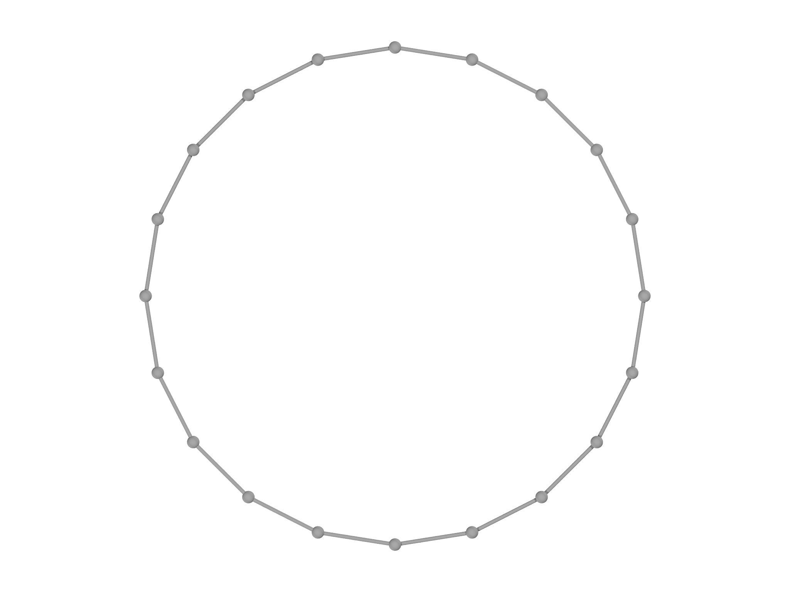
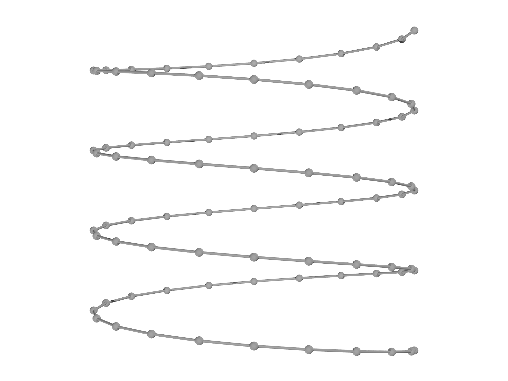
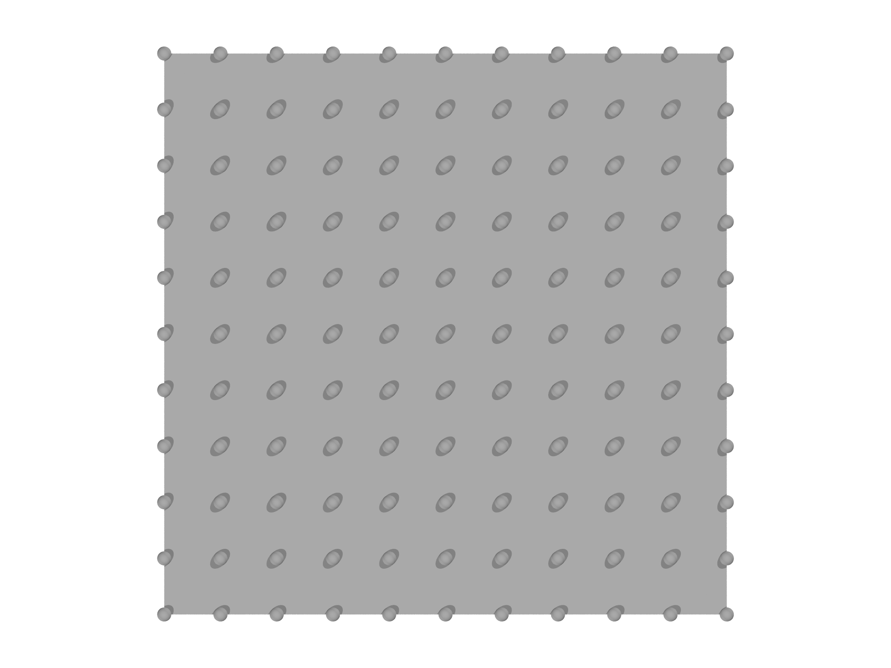
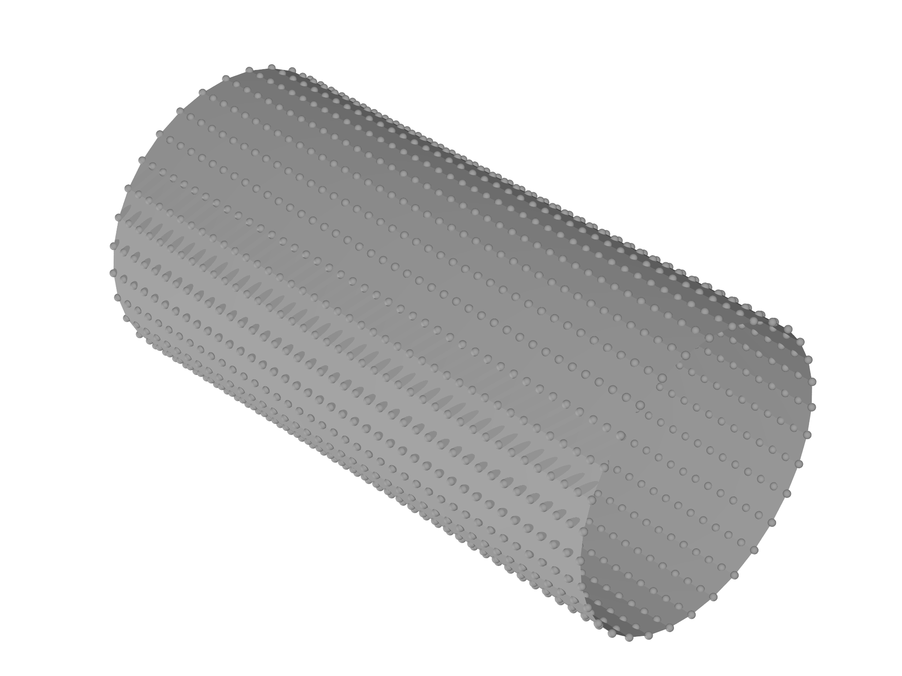
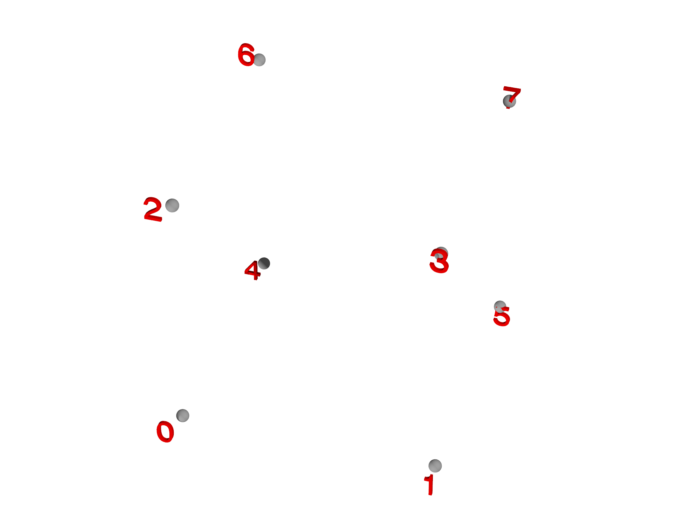
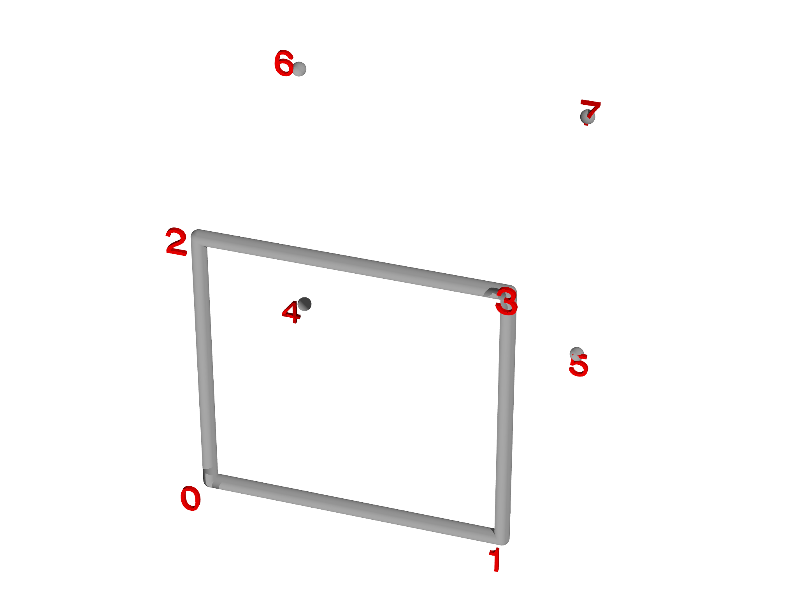
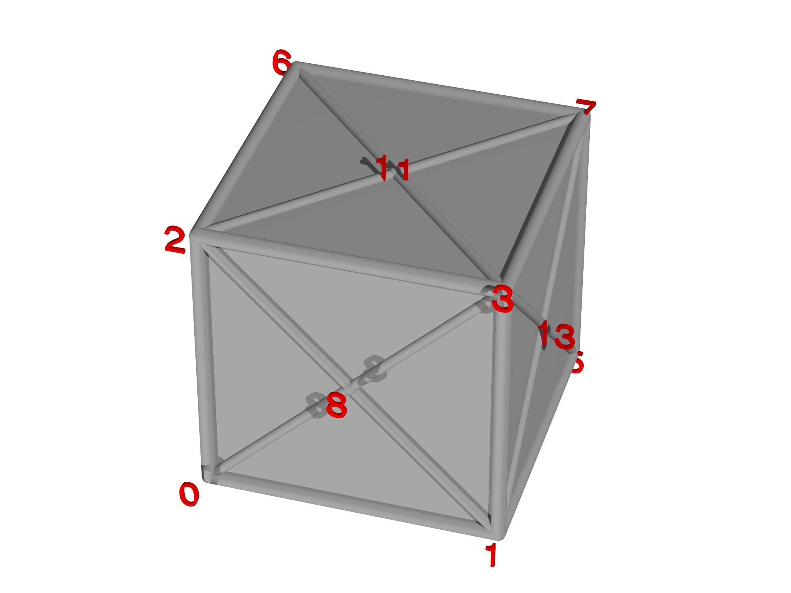
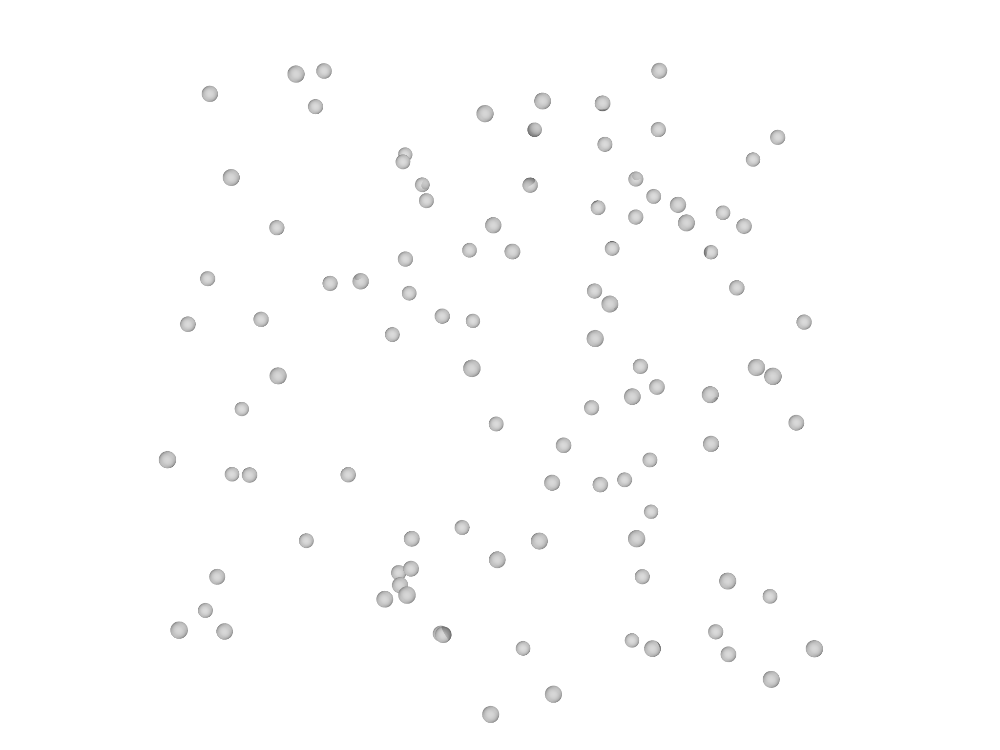
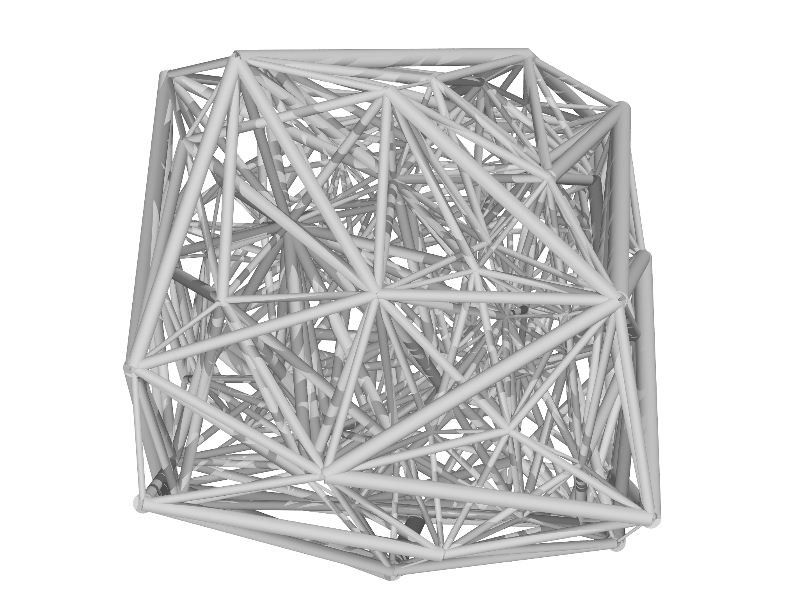

The meshtools module
Meshtools provides many useful functions for working with Meshes, including constructors to create certain kinds of Mesh and also classes for refining, coarsening and merging Meshes.
LineMesh
The LineMesh function is a convenient way to create a Mesh from a
one-parameter parametric function. You must specify the function to use
and a Range of points to generate. LineMesh then evaluates each point
in the Range and joins them together with a line element.
This is useful to generate meshes such as a simple straight line (Fig. 5.4, left panel):
var m = LineMesh(fn (t) [t,0], -1..1:0.1)
You can also request the ends of the Mesh be joined together to form a
loop by specifying closed. This code generates a circle (Fig.
5.4,
center panel):
var m = LineMesh(fn (t) [cos(t),sin(t)], -Pi...Pi:2*Pi/10, closed=true)
You can increase the resolution of the circle by changing the stepsize
in the Range, for example to 2``*``Pi/20 to double the number of
points. Note the use of the exclusive Range operator here, ..., rather
than ..to avoid duplicating the point at (1,0).
The output Mesh can be of any dimension, such as this helix in 3D (Fig. 5.4, right panel). Notice that here we use a regular function rather than an anonymous function:
fn helix(t) {
return [cos(2*Pi*t),t/2,sin(2*Pi*t)]
}
var m = LineMesh(helix, -2..2:1/20)

AreaMesh
AreaMesh is similar to LineMesh function creates a Mesh from a
parametric function, which now takes two parameters. To create a square,
var m = AreaMesh(fn (u,v) [u,v,0], -1..1:0.2, -1..1:0.2)
where notice that a separate Range is required for \(u\) and \(v\). By
default, the output of AreaMesh only contains grade 0 and grade 2
elements, i.e. vertices and facets, as is visible in Fig.
5.5(left). To add in grade 1 elements if
required, call the addgrade method on the Mesh:
m.addgrade(1)
This gives the result shown in Fig. [5.5](#fig:AreaMesh-1(right).

addgrade.As with LineMesh, the Meshes can be closed in one or both directions, enabling the creation of a cylinder,
m = AreaMesh(fn (u, v) [v, cos(u), sin(u)],
-Pi...Pi:Pi/16,
-2..2:0.1, closed=[true, false])
and a torus,
var c=1, a=0.5 m = AreaMesh(fn (u, v) [(c + a*cos(v))*cos(u),
(c + a*cos(v))*sin(u),
a*sin(v)],
0...2*Pi:Pi/16,
0...2*Pi:Pi/8, closed=true)
The results of these are displayed in Fig.
5.6.
Note that the meshes generated by more modules that incorporate some
degree of quality control, e.g. implicitmesh or meshgen, are
generally better and should be used in preference to those created by
AreaMesh.

PolyhedronMesh

PolyhedronMesh helps to create Meshes corresponding to polyhedra. To make a cube, for example, we specify the eight vertices (see Fig. 5.7, left),
var vertices = [[-0.5, -0.5, -0.5],
[ 0.5, -0.5, -0.5],
[-0.5, 0.5, -0.5],
[ 0.5, 0.5, -0.5],
[-0.5, -0.5, 0.5],
[ 0.5, -0.5, 0.5],
[-0.5, 0.5, 0.5],
[ 0.5, 0.5, 0.5]]
and the six faces,
var faces = [ [0,1,3,2], [4,5,7,6],
[0,1,5,4], [3,2,6,7],
[0,2,6,4], [1,3,7,5] ]
Note that the vertex ids must be given in order going around each face (see Fig. 5.7{reference-type="ref" reference="fig:PolyhedronMesh"}, center). Once the faces are specified, we can create the mesh,
var m = PolyhedronMesh(vertices, faces)
m.addgrade(1)
Note that PolyhedronMesh automatically creates additional vertices and generates triangles to complete the mesh (Fig. 5.7, right). We then added line elements (grade 1) as these are not automatically created by PolyhedronMesh.
DelaunayMesh

The DelaunayMesh constructor function performs a delaunay "triangulation" of a point set. For example, creating a random cloud of points (Fig. 5.8, left panel):
var pts = []
for (i in 0...100) pts.append(Matrix([2*random()-1, 2*random()-1, 2*random()-1]))
we can then call DelaunayMesh to construct a tetrahedralization.
DelaunayMesh only generates elements of the highest grade (in 2D, area
elements, in 3D volume elements) so if edges are needed these can be
added with addgrade.
var m=DelaunayMesh(pts)
m.addgrade(1)
The resulting tetrahedralization is shown in Fig. 5.8, right panel.
ChangeMeshDimension
Occasionally, one wishes to take a mesh embedded in one space, say two
dimensions, and embed it in a space of different dimensionality. For
example, you may wish to use a 2D mesh generated with MeshGen in 3D
space. The function ChangeMeshDimension provides a convenient way to
do this:
var new = ChangeMeshDimension(mesh, dim)
where dim is the target dimension of the new mesh.
MeshBuilder
The MeshBuilder class facilitates manual construction of a Mesh object. It is primarily intended to be used by other mesh building algorithms, but is occasionally useful. To begin, create a MeshBuilder object:
var mb = MeshBuilder()
You can then add vertices and other elements one by one by calling appropriate methods. Let's build a tetrahedron by first adding the vertices:
mb.addvertex([0, 0, 0.612372])
mb.addvertex([-0.288675, -0.5, -0.204124])
mb.addvertex([-0.288675, 0.5, -0.204124])
mb.addvertex([0.57735, 0, -0.204124])
We then need to add edges connecting these vertices, and faces as well. We could do this one by one, giving a list of vertex ids for each element in turn,
mb.addedge([0,1])
mb.addedge([0,2])
// ... etc.
but there's a smarter way for this case. Notice that the vertex ids
corresponding to the edges of the tetrahedron correspond to the sets of
size 2 generated from the list [``0,1,2,3``] as can be seen by running
this code:
var vids = [0,1,2,3]
for (s in vids.sets(2)) print s
We can therefore generate the edges automatically,
var vids = [0,1,2,3]
for (s in vids.sets(2)) mb.addedge(s)
and the faces as well, which are the sets of size 3,
for (s in vids.sets(3)) mb.addface(s)
We can finish by adding a single grade 3 element corresponding to the volume:
mb.addvolume(vids)
Once all these have been added, call the build method to create a Mesh
object:
var m = mb.build()
and the resulting Mesh is shown in Fig. 5.9.